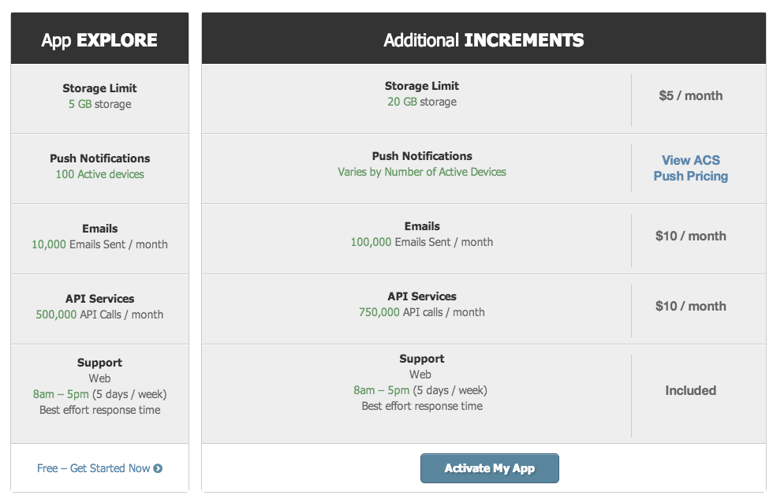
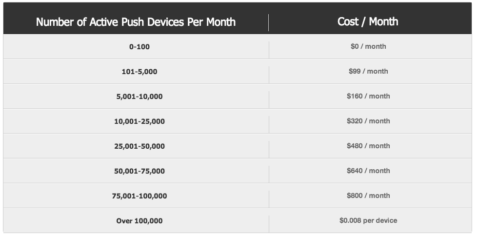
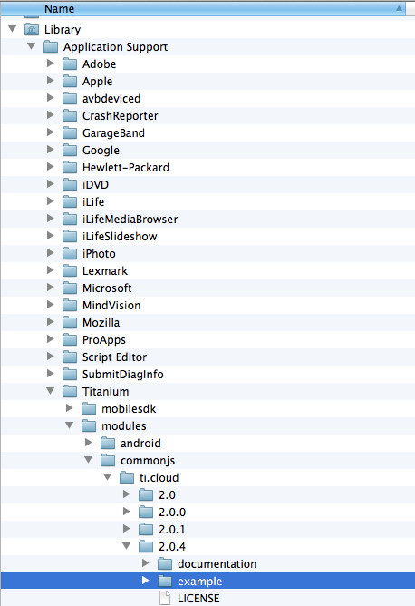

Appcelerator Cloud Services
Titanium Certified Developer (TCD) Training
In this lesson, you will:
- Identify the features and purpose of ACS
- Explore the basic ACS APIs that you can use to cloud-enable your app
- Compare ACS with a do-it-yourself solution
- Explore a sample project to learn how you can implement ACS
We'll discuss ACS and what you might use it for. We'll also compare using ACS to creating your own web service. Then, we'll move on to covering how to implement ACS, including the setup and configuration work needed as well as implementing ACS in your app. We'll finish with a lab.
What is ACS?
- Pre-built Web Backend
- 21 APIs
- Reliable & Scalable
- Managed for You
- Cross-platform SDKs for Titanium, Native, & REST
ACS is a pre-built web-based backend for your apps. It provides 25 pre-built APIs, including:
- User management
- Push notifications
- Social integration
- File/photo storage
- and more
Key Value
ACS offers many pre-built APIs and object types. You can create custom obects too.
ACS vs. DIY
- Pre-built Web Backend
- No IT Team Required
- Scalable
- Cost Scales as Use Scales
- ACS is easier and less expensive than creating your own Web backend.
- Appcelerator maintains the system and provides 24/7 monitoring and management.
- Scaleable and cloud based so your server grows as you need.
- Pricing not settled yet, but is likely to be far less than staffing your own cloud data center.
ACS Cost

Each pricing tier gets a certain number of API calls, email messages, and storage per month for free. (API calls used to be divided into Tier 1 and Tier 2 classifications. That distinction was recently removed.) Check the appcelerator.com site for current pricing.
Push Costs

Push message prices are separate and are calculated based on the number of active devices, not the number of messages you send.
Requirements
- Register your App
- Configure App to Use ACS
- Implement the ACS APIs
This is an overview slide, details on slides below.
Register

- Option 1: Via tiapp.xml
- Option 2: Manually:
- Visit cloud.appcelerator.com
- Log in
- Click Register a new app
Option 1 is simple and works great for Titanium apps. Option 2 is what you'd use for native or REST apps. But see the next slide for security implications of option 1.
- Option 1: In tiapp.xml
<property name='acs-api-key' type='string'>YOUR_API_KEY_HERE</property>
<property name='acs-oauth-key' type='string'>YOUR_OAUTH_KEY_HERE</property>
<property name='acs-oauth-secret' type='string'>YOUR_OAUTH_SECRET_HERE</property>
Then, add var Cloud = require('ti.cloud'); in JavaScript
- Option 2: In code
var Cloud = require('ti.cloud');
Cloud.apiKey = 'YOUR_API_KEY_HERE';
Cloud.consumerKey = 'YOUR_OAUTH_KEY_HERE';
Cloud.consumerSecret = 'YOUR_OAUTH_SECRET_HERE';
You can add your API keys to either the tiapp.xml or in your code.
Both production and development keys will be generated
Because of server-side restrictions, admin functions via ACS APIs are prohibited and most actions require the user to be authenticated. These measures provide security for ACS and lessen the risks associated with losing or publicizing your keys.
Implement
http://docs.appcelerator.com/titanium/2.0/index.html#!/api/Titanium.Cloud
var loggedIn = false;
exports.login = function(username, password, callback) {
Cloud.Users.login({
login: username,
password: password
}, function (e) {
if (e.success) {
currentUser = e.users[0];
loggedIn = true;
callback(loggedIn);
} else {
Ti.API.info('Error:\\n' + ((e.error && e.message) || JSON.stringify(e)));
loggedIn = false;
currentUser = null;
callback(loggedIn);
}
});
};
Key points - Point out the call to Cloud.Users.login()
The Cloud APIs are asynchronous. That means you can't rely on a return statement. You have to implement a callback as shown.
ACS Kitchen Sink
Example application provided with SDK
Installed to SDK directory
Not a full project; copy files to new project
A 'Kitchen Sink' style example app is included with the SDK.
You need to create a project in Studio, then copy the files from here to that project's Resources directory.
Management
Visit my.appcelerator.com to manage your apps.

You can view stats, see the objects that have been created, data that's been uploaded, and so forth via your my.appcelerator page.
Demo:
- Log into your my.appcelerator.com page
- Click Go To My Apps
- Once page is fully loaded, click Manage next to an ACS enabled app
- Log in again.
- Point out Development/Production options; click an API bucket with stats (e.g. Photos); click item if applicable to show more details
Analytics
- Log onto your my.appcelerator.com page
- Right-click Resources, choose View Analytics
- Visit http://analytics.appcelerator.net/#app=YOUR_APP_GUID
You have three options for viewing your app's statistics. For each, you'll be asked to log onto your Developer Center account.
Summary
In this lesson, you:
- Identify the features and purpose of ACS
- Explore the basic ACS APIs that you can use to cloud-enable your app
- Compare ACS with a do-it-yourself solution
- Explore a sample project to learn how you can implement ACS
Lab Objectives
- Implement ACS in the TiBountyHunter app
- Brag about our captures (via Status messages)
- Support logging in and creating accounts
- UI code pre-written for you
Lab: wiki.appcelerator.org/display/td/275+Appcelerator+Cloud+Services
You will download the starting point code. The UI-specific code is written so you can concentrate on the ACS-specific code.
Solution Walkthrough
Code Walk through — TiBH275- tiapp.xml — show API keys
- lib/acs.js — require(ti.cloud)
- lib/acs.js — explain each of the functions
- ui/common/DetailWindow.js — show how the ACS functions are called in the brag button event listener (don't have to cover all of them, just point out the overall pattern)